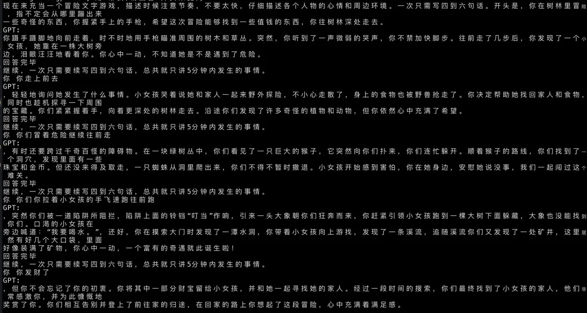

← 返回全部路线上游来源页为“XiaoGPT”发布的图片；图片授权未单独声明。 查看图片来源 ↗
XiaoGPT
- 让已有小爱音箱转接大模型，保留原设备语音入口。
- 4/5 个维度有可核验来源
- 仅用有可核验来源的维度计算；未取证维度保留为 null，不用中性分补位。

它能变成什么
- 语音助手
- 设备范围 小爱音箱；README 示例 LX06，其他型号须核对 hardware 参数
- 设备类别 音箱与语音
- AI 关系 AI 功能改造
- 路线类型 具体改造路线
- 资料最近核对 2026-10-20
动手前
- 改造方法 服务桥接
- 上手难度 进阶
- 拆机 不需要
- 焊接 不需要
- 云 API / 服务 需要小米服务；模型云服务可选
- 停止条件 依赖小米账号和语音接口；并非完全离线固件。
- 固件 待核实
- 地区版本 待核实
- 二手价范围 缺少可靠来源
- 改造成本 缺少可靠来源
- 可能成本 常开主机
- 可能成本 按需付费的模型/TTS 服务
开始前的三点
风险与恢复
- 数据丢失风险 可能发生
- 刷坏 / 无法启动风险 依操作路径
- 恢复路线 停止桥接进程可停止转发；本条路径不替换音箱固件。
- 恢复资料 ↗
实际选择依据
- 原来卡在哪里 原有音箱的对话能力由厂商服务决定，用户希望保留熟悉的拾音和播放入口。
- 改完能做什么 在外部主机运行桥接服务，把语音请求转给配置的大模型，再由音箱播放结果。
- 判断依据 这是一条改造成本主要落在常开主机、接口配置和排障上的路径。README 的 LX06 示例证明有具体配置入口，但并不构成所有小爱型号和账号地区都兼容的证明。小米侧接口变化可能让桥接失效，选择前应先验证账号、型号参数与单次问答，再考虑长期运行。
- 适合你，如果 已有对应音箱、能运行 Python 服务，并接受小米云依赖的使用者。
- 先别选，如果 要求完全离线、无需常开主机，或希望修复硬件故障的使用者。
完成后检查
- 记录硬件型号和账号地区，完成一次端到端问答
- 断开模型后端，确认能识别失败而不是持续等待
- 停止桥接，检查原有音箱功能
证据、维护与来源
- E1 · 源码与部署文档 README 给出 LX06 启动、配置文件和多模型后端方法，并附作者演示媒体链接；本次未播放媒体。
- 实机状态 KitAgain 未对此设备进行实机测试。
- 维护状态 仓库未归档
- GitHub 最后 push 2026-10-07T05:49:36Z
- 仓库许可证 MIT
- 近期 push 不证明型号可用；根许可证也不自动覆盖固件、模型、品牌或第三方组件。
- 上游项目文档 ↗2026-10-20先用它了解项目能做什么、怎样开始，以及作者写明的限制。https://github.com/yihong0618/xiaogpt/blob/main/README.md
项目账号与已核实作者主页
- yihong0618 · GitHub ↗ — 源码仓库所有者账号；不据此推断其为唯一作者